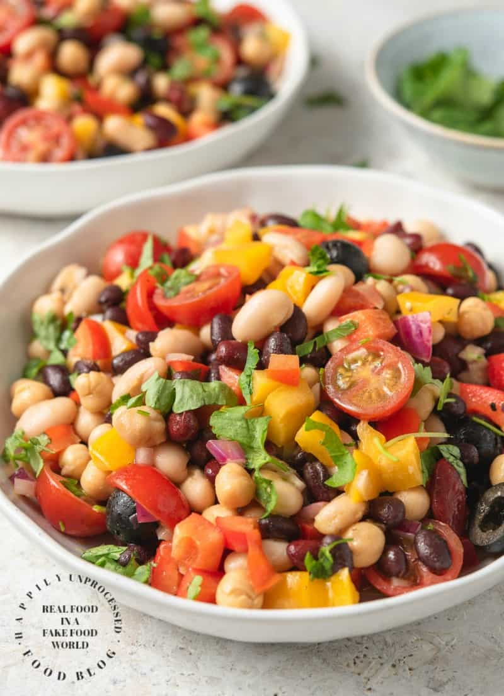

Sunshine in a Bowl

This bean salad can serve as either an appetizer
or a full meal (best paired with some kind of
grain vehicle like rice, tortilla chips, etc.)
It is quite simple to prepare as long as you can safely chop veggies.
Ingredients
- 2 cans black beans, drained and rinsed
- 1 can corn, drained
- 3 diced tomatoes
- 1 diced bell pepper (red or green)
- 1 diced onion
- 2 diced avocados
- ¼ cup olive oil
- ⅓ cup lime juice
- 2 or 3 cloves of garlic, pressed or minced fine
- ½ bunch of fresh cilantro, chopped
- 1 tsp cumin
- 1 tsp chili powder
- salt and black pepper to taste
Directions
- Combine the first 7 ingredients in a bowl, and put all remaining
ingredients in a jar.
-
Put a lid on the jar and shake until ingredients are well mixed.
- Pour the contents of the jar over the contents of
the bowl.
- Toss, and serve!